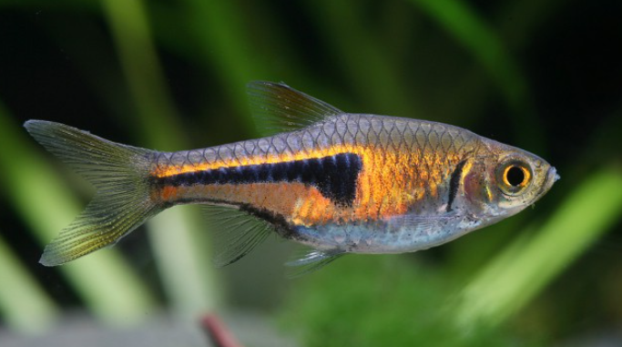

Systématique
- Ordre : Cypriniformes
- Famille : Danionidae
- Genre : Trigonostigma
- Espèce : T. espei
- Syn. : Rasbora espei

Trigonostigma espei, souvent appelé Rasbora d'Espe ou Faux-Rasbora arlequin, est un petit cyprinidé d'Asie du Sud-Est décrit par Meinken en 1967.
Il mesure environ 2,5 à 3,0 cm. Il se distingue de son cousin T. heteromorpha par son corps plus fuselé et sa coloration beaucoup plus cuivrée ou néon orange, qui s'étend largement autour de la tache noire caractéristique en forme de coin (ou de "lambel").
C'est une espèce extrêmement populaire en aquascaping pour sa couleur vibrante et sa taille modeste, parfaite pour les aquariums plantés.
C'est un poisson de banc grégaire qui doit être maintenu en groupe d'au moins 10 individus. En banc, ils sont beaucoup moins stressés et leurs couleurs éclatent littéralement sous un bon éclairage.
Pacifique et vif, il occupe la zone médiane du bac. Il cohabite parfaitement avec d'autres espèces asiatiques calmes et les crevettes naines. Il préfère un bac avec des zones de plantation dense et un espace de nage dégagé au centre.
Mode : ovipare (fixation sous les feuilles).
Contrairement à beaucoup de Rasboras qui diffusent leurs œufs, le genre Trigonostigma colle ses œufs sous la face inférieure des feuilles de plantes (souvent des Cryptocorynes ou des Anubias).
Le couple nage sur le dos pour coller les œufs. Pour réussir l'élevage, une eau très douce et acide est nécessaire. Les parents ignorent les œufs après la ponte mais peuvent les manger s'ils sont découverts.
Dimorphisme sexuel : Les femelles sont plus rondes et légèrement plus grandes. Chez les mâles, la tache noire est souvent plus pointue vers l'avant, tandis qu'elle est plus arrondie chez la femelle.
Espérance de vie : 3 à 5 ans.
Originaire de Thaïlande et du Cambodge. Il fréquente les petits ruisseaux forestiers, les marais et les affluents aux eaux calmes et claires, souvent riches en végétation aquatique et en racines.
Répartition

Origine naturelle :
- Asie du Sud-Est.
- Thaïlande (Province de Krabi, Chanthaburi).
- Cambodge.
Paramètres de maintenance
Température : 23 à 28 °C.
pH : 6,0 à 7,5 (préfère l'eau légèrement acide).
GH : 2 à 12 °dGH.
Volume conseillé : Minimum 60 L pour un banc confortable.
Régime alimentaire
Régime : omnivore / insectivore.
Dans la nature, il consomme de petits invertébrés et du zooplancton.
En aquarium, il accepte tout type de nourriture sèche (paillettes, micro-granulés), mais raffole des nourritures vivantes ou congelées comme les daphnies, artémias et cyclops.